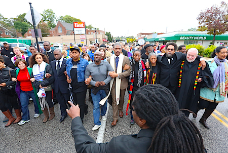

Dear Friends,
As we approach one year since the murder of Mike Brown, Jr. in Ferguson MO, we are coming together to respond to the call of Ferguson Action’s #UnitedWeFight to bear witness to the longest sustained protest in our nation since the Montgomery Bus Boycott.
We now know Ferguson Is Everywhere: the movement for Black lives has grown immensely, and while we’ve taken a few strides toward justice in the form of civilian oversight boards and occasional indictments, for example, the daily loss of Black lives remains to demonstrate the urgency with which we must follow Black leadership in demanding accountability and continuing to build this movement.
This movement has highlighted the power of nonviolent action in today’s struggles for justice and the critical need for people of faith to take action, knowing that none of us are truly free until all of us are free.
The Fellowship of Reconciliation is investing our bodies, hearts, and resources toward the August 7 to 10 national mobilization. Please join us by joining us in St. Louis if you are able, or by organizing solidarity actions in your own communities.
Take Action
Here are four ways you can take action this coming week:
1. We ask everyone to join us in a National Moment of Silence on Sunday, Aug. 9th at 11:55 a.m. CT (12:55 p.m. ET / 10:55 a.m. MT / 9:55 a.m. PT) for 4.5 minutes to honor Mike Brown and remember the four-and-a-half hours his dead body lay in the street.
2. Join us in a day of mass civil disobedience by planning and participating in Moral Monday solidarity actions on August 10th in your home communities. Investigations and reports are not enough. We must demand federal intervention into the systematic terror against people of color by police, state security, and white vigilantes. Check the Ferguson Action site for a listing of nationwide events and post your own.
3. Center the Movement for Black Lives in your tradition’s worship and gatherings, particularly during the week of August 3-10. Examples of useful resources for faith communities include the Hands Up Sabbath toolkit created last October and other offerings from our friends at Live Free USA (PICO Network: including the new "3 1/2 Minutes, 10 Bullets" sermon series & curriculum), Showing Up for Racial Justice, Standing on the Side of Love (UUA), Holy Week of Resistance, and more.
4. Donate to the St. Louis Legal Support Fund -- dozens of protesters have been jailed in recent weeks, and more may be arrested on August 10. This depleted fund provides bail for arrestees and legal support, and needs replenishing now.
FOR's Role
In addition to sending national staff to St. Louis to take part in the mobilization alongside local organizers, the Mid-Missouri FOR chapter, and others, here are some of the ways FOR-USA is resourcing the movement at this important time:
** Lizzy Jean of the Deep Abiding Love Project, with the support of FOR, has developed an extensive Ferguson Curriculum intended as a guide those traveling to St. Louis to respond to the national mobilization call. The curriculum also can be applicable to movement-building work at home. It will be made available to all via free download on FOR's website; reply to this email if you want to receive the web link upon publication.
** Rev. Osagyefo Sekou, FOR Bayard Rustin Fellow, has convened a Faith in Ferguson group of regional and national religious leadership who will bear witness in a Moral Monday mass civil disobedience action on August 10. With FOR support, trainings in nonviolent civil disobedience will be held throughout the weekend.
** Rev. Sekou, Rev. Renita Lamkin, and Prof. Sharon Fenema of the Pacific School of Religion are co-teaching a week-long #BlackLivesMatter immersion course at Eden Theological Seminary (cosponsored by PSR).
** FOR is providing direct support to three national delegations to St. Louis: a BPFNA - Bautistas por la paz delegation; a group of Baltimore community and religious leaders working to build connections between the movements in Baltimore and Ferguson; and the "All Roads to Ferguson: The Black Lives Matter Tour" of artists & students, organized by Moral Monday CT (with stops in Hartford, New York City, Baltimore, Pittsburgh, Cleveland, Cincinnati, and Louisville).
We are honored to stand in solidarity with the Black Lives Matter movement alongside you, our FOR community! #UnitedWeFight!
In pursuit of justice,
Gretchen, Ethan, Kristin, and the FOR team
Images: 1) Ferguson Action; 2) Heather Wilson, PICO Network
|